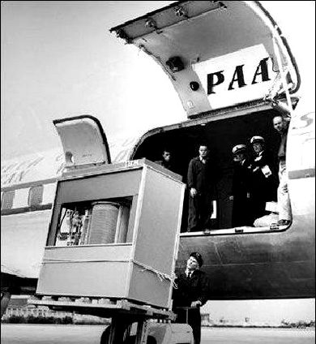
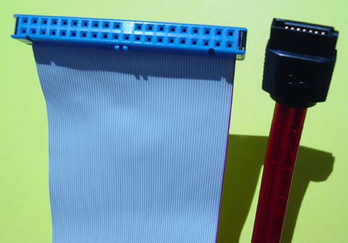

Chapter 4 Thanks for the Memory
As promised, we'll now take a look at what your CPU does with those millions of computations per second. Just like you have the ability to recall memories, your computer has the ability to store information for both the short and long term. As you might expect, the space reserved for short-term memory is generally smaller and easier to access, while the hardware dedicated to long-term memory is usually larger and more time-consuming to use. We'll begin our exploration of the various types of memory with the smallest and fastest available to the computer and work our way up to the biggest and baddest!
First, though, let's review some terms that describe the size of data. The smallest piece of data we can represent in memory is a single bit, where a bit is simply zero or one. It's not usually that useful to store pieces of information that small, so we usually talk about data in terms of bytes, where one byte is simply 8 bits. As we saw, one byte is roughly the size of a few ASCII characters. Still pretty small, so we can go all metric system and add some prefixes. One kilobyte is equal to 1000 bytes, and kilobyte is frequently abbreviated as KB. A Word document with a couple pages of text (i.e., no images) is between 5-15 kilobytes, that picture of the Harvard Mark I from the previous section is about 130 KB in size, and the text of books like The Adventures of Tom Sawyer and Frankenstein's Monster are just under 500 KB. Next up is a megabyte, which is the same as 1000 kilobytes and abbreviated as MB. A high resolution image will probably come in at a few megabytes, as will MP3s of popular songs. Ke$ha's masterpiece "We R Who We R", which is 3 minutes and 25 seconds of pure artistry, measures about 3 megabytes, while everyone's favorite party song, the "Cha Cha Slide" by DJ Casper, is about 6 MB at 6 minutes and 19 seconds long. CDs can hold about 700 megabytes of data. After a megabyte comes a gigabyte, which is equal to 1000 megabytes and abbreviated GB. A standard-definition movie downloaded from iTunes is probably around a gigabyte in size, while high-definition Blu-Ray disks can hold about 25 GB. Shopping for a new computer, you'll often see the total storage capacity given in terms of gigabytes as well. A terabyte (TB) is equivalent to 1000 megabytes, and the printed collection of the Library of Congress is roughly 10 TB. After a terabyte is a petabyte (PB) followed by an exabyte; as a point of reference, the text of all words ever spoken by human beings is esimated to come in at a few exabytes.
In summary:
| Name | Abbreviation | Size in bytes | Storage example |
|---|---|---|---|
| Byte | B | 8 bits | Characters of text |
| Kilobyte | KB | 103 bytes | Word document, small image |
| Megabyte | MB | 106 bytes | MP3 song, large image |
| Gigabyte | GB | 109 bytes | Movie, ~350 photos, ~250 songs |
| Terabyte | TB | 1012 bytes | ~350,000 photos, ~250,000 songs |
Just when you thought we were done with the CPU, we're heading right back there. Turns out that a few different types of memory are actually found directly on the CPU. The smallest and fastest memory on the CPU is found in registers. Registers hold extremely small amounts of data: on the order of several bytes. Earlier, when we said that a CPU could add two numbers together, we took for granted where those numbers would be coming from and where the answer would go. This is where registers come in! While the CPU is in the process of adding two numbers together, both numbers are stored in registers, and once the CPU has computed the answer, the result is also stored in a register. Registers are also used to keep track of things like the instruction that is currently being decoded or executed as well as what instruction should be put into the pipeline next. Since registers are so small, there's not much more that could even fit in a CPU register. But, in order for the CPU to quickly perform its addition, accessing register data must be extremely fast, so we have a bit of a trade-off between the size of the memory and the speed of the memory. In fact, we'll see this trade-off become a trend throughout this section! The number of registers on a CPU can vary, with some CPUs having just 16 registers and others having as many as 256 registers.
Okay, but a few registers that can't hold much more than a 32-bit number don't seem sufficient for playing a several megabyte song or watching a several gigabyte movie. In order to efficiently handle tasks like these, we'll need some short-term memory with a larger capacity. That's where RAM, or Random-Access Memory, comes in. A laptop on today's market will likely have between four and eight gigabytes of RAM, so we're talking much more space than something like a CPU register. In fact, when you see any language that refers to the amount of "memory" in a computer, there's a very good chance it's referring to RAM, since RAM is the main source of short-term memory in your computer. Here's what a modern stick of RAM (in this case, with the ability to hold 512 MB) looks like.

Your laptop probably contains at least a couple of sticks of RAM. The CPU has the ability to read values from RAM (i.e., access already-stored data) and write values to RAM (i.e., store new data). We can think about RAM as a really long street with lots of houses. Each house has an address, which is simply a unique whole number starting from zero, that is used to identify it. Each one of these houses can store exactly one byte (remember, 8 bits!) of data. So, the total number of houses available to your computer depends on the total size of the available RAM. With 2 GB of RAM, for example, your computer will have about two billion houses, and with 4 GB of RAM, your computer will have about four billion houses. When the CPU needs to read or write information from RAM, it will do so using a memory address. For example, let's say the following represents a portion of RAM.
| 00110110 | 00000000 | 00000000 | 00000101 | 00111001 | 10101011 |
| 100 | 101 | 102 | 103 | 104 | 105 |
Because each block can only hold one byte, data that is larger than will have to be split up into single-byte blocks. Let's say that a 32-bit (aka 4-byte) number has been broken up into chunks and stored at the addresses 101-104. In order to read that number, the CPU will first ask for the data stored at the address 101, where the number starts (i.e., where the leftmost bits are found). Now, it will read the next three boxes, since the CPU knows its looking for a 4-byte number. Putting these four blocks of memory together, we can see that the number stored at the address 101 in RAM is 00000000000000000000010100111001, or 1337.
We call this way of representing numbers in RAM, in which the bytes are read from left to right, big-endian. Here, the most significant byte is stored at a lower address than the least significant byte. It's actually not uncommon for computers to store bytes in the opposite order, with more significant bytes stored at higher addresses in memory. This is called little-endian. In the above example, if we were instead using a little-endian representation and read the same memory addresses (101-104) again, we would instead get the number 00111001000001010000000000000000, or 956,628,992. Notice how we didn't change the order of the bits in each memory slot. Instead, we only changed the order in which the 8-bit (or 1-byte) blocks of data were read: first, we read the sequence of bits from address 104, then the bits from address 103, and so on. Whether data is stored using a big-endian or little-endian representation is up to the CPU!
The "Random-Access" part of RAM refers to the fact that accessing any address in RAM takes the same amount of time. It's no faster, for example, to access the information stored at the address 0 than it is to access the information stored at the address 1048576. As we'll see shortly, this isn't the case with all types of memory!
However, accessing data stored in RAM is significantly slower than accessing data stored in a CPU register. In fact, the CPU can typically complete a cycle much faster than it can read a value from RAM, so the CPU could waste cycles while waiting for a value to be read from RAM. In order to increase efficiency and waste less time, the CPU also utilizes a layer of storage called the processor cache. Not only is the cache physically located closer to the CPU, but data stored on the cache can be accessed more quickly than data stored in RAM. In many cases, the CPU will need to use some value from RAM more than once, just like you might listen to a song on repeat. In my case, such a song would likely be something by Alexandra Stan. Rather than going all the way to RAM multiple times to grab a frequently-accessed value, the CPU might instead place it on the cache, where it can be fetched much more quickly in the future.
Processor caches are able to hold significantly less data than RAM. Typically, computers have several levels of caches, each having different sizes and speeds. The L1 cache is the smallest, fastest, and closest to the CPU, and the L1 cache typically comprises several (e.g., 32 or 64) kilobytes in size. Next up is the L2 cache, which is typically a bit farther away from the CPU and slower to access, but usually holds up to several megabytes (e.g., 4 or 8) of data. Finally, the L3 cache is even slower, but can hold even more data. Not all CPUs have all three levels of caches—some CPUs don't utilize an L1 cache, while others don't have an L3 cache. All that being said, accessing data in the CPU cache is still much faster than accessing data from RAM.
I love to cook, and the way I (and most people) work in the kitchen isn't all too unlike the CPU cache hierarchy. When I'm cutting vegetables, I usually have a knife in one hand and a vegetable in the other. I only have two hands, so I can't hold much more than that, but the items that are already in my hands are the ones I can use the fastest. Sounds like a CPU register to me. If I'm going to be making a salad, I'll probably put several vegetables on my counter, since I know I'm going to need them all. It takes a little longer to grab a tomato a few inches away from the cutting board than it does for me to grab the knife already in my hand, but it's still pretty fast. I knew I was going to need to use those vegetables, so I placed them on my L1 cache, or my counter. Before I started cooking, I planned out my delicious meal, went to the grocery store, and made sure everything I needed was readily available in my kitchen. It takes me a bit of time to grab something from the fridge if I'm standing at the counter, but I still wouldn't consider that to be too much time at all. So, my kitchen is like my L2 cache. Finally, if I realize I forgot something, I can always head back to the store down the street to pick it up. Compared to a grocery store, my kitchen doesn't have that much space. However, it would take me considerably longer to do so, just like reading data from RAM takes a lot longer than reading from the cache.
So far, we've only talked about computers' short-term memory. RAM, though the largest form of storage we've seen so far, typically has a maximum capacity of several gigabytes. However, the tens of gigabytes that make up my music and movie collection (and only when I'm particularly bored will I watch several movies at the same time) need to go somewhere!
You computer's hard drive is its primary form of long-term storage. Unlike RAM, which holds only a few gigabytes, you'll find that modern hard drives often hold 500, 750, or 1000+ GB. Hard disks, or HDDs, are typically 3.5" in size in desktop computers and 2.5" in size on laptops. As shown below, a typical hard disk consists of several circular platters that don't look all that dissimilar from CDs. Each platter is coated in a thin layer of magnetic material that is used to encode information. A few sections ago, we said that a binary encoding could be used to represent the sign of a magnet, which can be positive (+) or negative (-). It just so happens that this is exactly how a hard disk represents information: a positive magnetic charge could represent a 1, and a negative magnetic charge could represent a 0. I know, it feels like an episode of LOST with all these subtle references.

The read-write heads are responsible for encoding and decoding information on the HDD using magnetism. Separate heads extend above and below each platter, and the space between a platter and its corresponding head is less than the width of a human hair (totaling only several nanometers). So that the platters aren't scratched or damaged, the read-write heads don't actually touch the platters, but are instead perched precariously above them. The heads are attached to an actuator arm, which allows the heads to move closer to the platters' centers or edges. Meanwhile, a separate motor on the spindle rotates the platters at speeds between 4,000 and 15,000 rotations per minute (RPM), with consumer disks typically rotating at 7,200 RPM. To give you a sense of how fast that is, the tires on a car going over 100 miles per hour spin at less than 2,000 RPM, and the rotation rate of an HDD is closer to that of a jet engine. Yikes, let's hope your computer doesn't take flight while you're reading this.
Luckily, the space required to store a positive or negative magnetic charge, or one bit, is extremely small. This means that hard drives are able to cram a huge amount of data into a very small space. However, we weren't always able to pack data so efficiently. Shown below is a hard disk from 1956. (Yes, that entire box.) Its capacity? 5 MB.

Now, we just need some way of giving each bit on the hard drive some kind of address, just like we did with RAM. However, because the number of bits that can be stored on a hard drive is so huge, giving each bit a single unique number might not be the most practical system in the world. Instead, each platter in the hard disk is divided into many concentric rings called tracks, along which slots for bits are stored. Each track is further subdivided into sectors, each of which holds a small, fixed amount of data, typically several hundreds of bytes. A group of adjacent sectors is known as a cluster. So, a single file will actually occupy multiple sectors on your hard disk, and your computer is responsible for remembering where files are stored and how much space they consume. Your computer can do so using a special file on the hard disk called the file allocation table, which is essentially a mapping of paths to files to platters, tracks, and sectors. That way, a request to a file using its path (as we do when we open a Word document, for example), can be translated to a phyiscal location on the hard disk.
This video nicely (albeit over-excitedly) ties together the various parts of the hard disk and how they interact to read and write data.
A few factors influence the performance of a hard disk. One, as you may have guessed, is the speed at which the hard disk rotates. As we've seen, a read-write head must by physically over a sector in order to read data from it. So, if it takes less time for the disk to rotate underneath the read-write head to the correct position, then we won't have to wait as long to read data. We call the amount of time it takes for a head to reach its destination the seek time. Also important is the hard disk's data rate, which describes how quickly data decoded from platters can be sent to the CPU. Older hard drives transferred data using PATA cables, which are 18" in length, have 40-pin connectors, and have maximum data transfer rates of 133 megabytes per second. Nowadays, SATA cables, which represent an improvement over the PATA standard, are much more common. SATA cables are several feet in length, have only 7-pin connectors, and have maximum data transfer rates exceeding 600 MB/s. Here, we have a PATA cable on the left and a SATA cable on the right.

However, hard disk drives are starting to become decreasingly common in consumer computers. Instead, many new machines utilize SSDs, or solid-state drives. While we saw that HDDs relied on the coordination of several parts moving at blazing speeds, SSDs instead have no moving parts. Unfortunately that means the storage and retrieval of data on SSDs won't be particularly mesmerizing to watch, but it does mean that SSDs are, in general, more durable and less likely to break due to mechanical failures. Similarly, SSDs tend to consume less power than HDDs, which could mean better battery life for laptops using SSDs. Solid-state drives are also much faster than hard disk drives, partly because latency causes like seek time are no longer an issue. Check out the video below for a performance comparison—the left laptop has an SSD and the right laptop has an HDD, but the two computers have identical hardware otherwise (CPU, RAM, etc.).
However, SSDs are generally more expensive than HDDs, so with the same amount of money, you can buy a larger-capacity HDD than you can an SSD. So, those gains in performance, power, and durability come at a cost. Looks like there really is no such thing as a free lunch. But hey, even if your hard drive can hold a terabyte of data, do you really use all of that space? Questions like these are important to ask when purchasing a new computer, as we'll do in the next section!
As you might expect, an SSD works very differently than an HDD. Most SSDs store data using NAND flash memory, which is also used by USB flash drives (aka "thumb drives") and camera memory cards. Flash memory stores data using a large grid of cells, each composed of two transistors, or small electrical components that can allow or block the flow of current. We're still using binary to represent data, and in this case, a 1 is represented by the flow of current, and a 0 is represented by the blockage of current. Current flows freely on a blank portion of an SSD drive, which represents a series of 1s. When a write operation is performed, some of those 1s will be flipped to 0s by sending a precise voltage to the control gate, one of the two transistors in a cell. This transfers electrons to floating gate, the other transister in each cell, which gives cells a positive charge and blocks the flow of current. Reading data, then, is as simple as sending current through a series of cells and determining where flow was blocked, which represents a series of 0s and 1s. This method of storing data does have its drawbacks, though. Each cell can be changed a fixed number of times before it no longer functions, so some effort must be put into ensuring writes distributed across the drive rather than concentrated in a particular section.
Alrighty, we've now seen several different types of memory and storage. Let's now recap how these various types of storage relate to each other. The registers on the CPU are the smallest and fastest, followed by the processor caches like the L1 cache and L2 cache. RAM is both the largest-capacity and slowest-to-access form of short-term memory. HDDs, which consist of platters read using fast-moving heads, and SSDs, which have no moving parts at all, are used for long-term storage, and thus have much higher capacity, but are also much slower to access. Here's a visual representation of a computer's memory hierarchy.

Finally, let's compare how long it takes for your computer to read and write data from the different storage mechanisms we've seen.
| Storage type | Access time | Relative access time |
|---|---|---|
| L1 cache | 0.5 ns | 1 second |
| L2 cache | 7 ns | 4 seconds |
| 1MB from RAM | 0.25 ms | 5 days |
| 1MB from SSD | 1 ms | 23 days |
| HDD seek | 10 ms | 231 days |
| 1MB from HDD | 20 ms | 1.25 years |
To put some of these numbers in perspective, here's Admiral Grace Hopper, one of the first ever computer programmers and a pioneer in the field.
Phew! That was a lot of information, but try to commit as much of it as possible to memory! Ha ha ha, I've been waiting all this time to drop that pun on you. Now that we know all about computer hardware, let's go shopping!!1!
Practice Problems
I just purchased a shiny new 32 GB iPod Touch. About how many songs can I put on it? If I want to use about half that space for eBooks, how many books can my virtual library hold?
My good friend is a budding photographer wondering what size memory card (e.g., an SD card or a CompactFlash card) he should buy. Give him a sense of what his options are, how many photos they can hold, and what they would cost.
My father has a huge music collection, so he's probably going to want to buy a computer with a lot of RAM, right? Why or why not?
CACHING QUESTION
If registers and the processor cache are faster than RAM, why don't we just use those all the time (instead of RAM)?
HOW HDDS WORK QUESTION
Why would you ever want to purchase an HDD over an SSD? How about an SSD over an HDD?